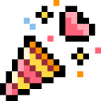
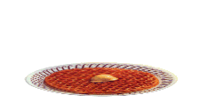
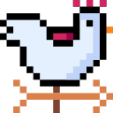
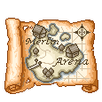

Come enjoy some cocktails with us at one of our favorite local haunts. If you're feeling peckish they also have vegan hotdogs and popcorn!
Event is child-friendly; however the venue is a bar, so under-21s will need to leave by 6pm when it reopens to the general public.

Ceremony + Reception — “A MYSTERIOUS and PORTENTOUS RITUAL”Join us for the main event at the HJK's Lakeview Terrace! The venue is partly indoors and partly outdoors, but the terrace is on the north side of the building so at this time of year it should be in shade for almost the full event. More details about venue access are on the Hotel + Transit tab.
Just a couple blocks away at 135 12th St.


Farewell BrunchWe'd love to see folks one last time before you scatter back to the four winds! Eat some tasty food and nurse your hangover with us. Arrive whenever (but we can't promise how much food will be left if you get there toward the end.)
